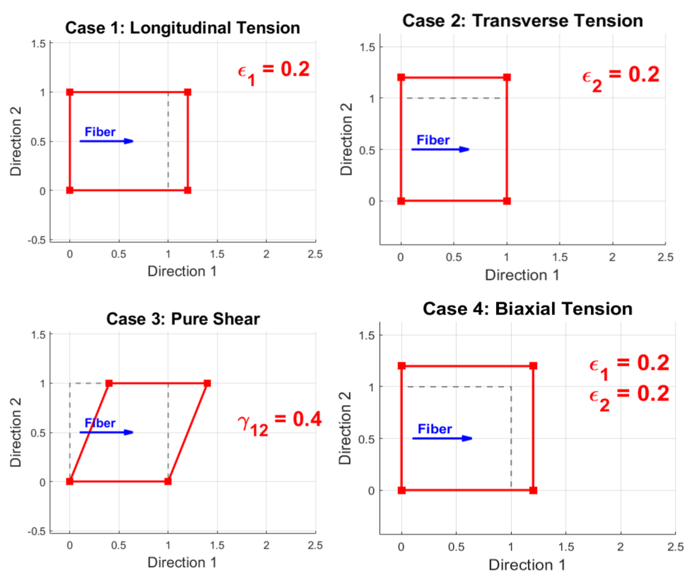
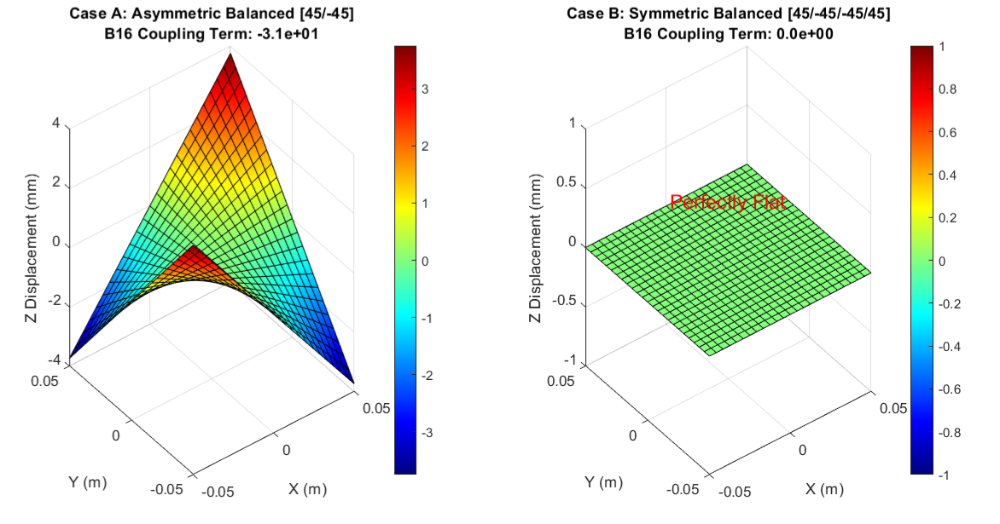

A formal teaching page on laminated structures, laminate stiffness, ply stress, strength assessment, and code interpretation
Teaching code package. The MATLAB scripts used in this page are available below.
A ply is one thin layer of composite material. When that ply is treated as a mechanically homogeneous orthotropic layer, it is also called a lamina. A laminate is a bonded stack of plies.
The purpose of CLT is to connect ply-level mechanics to laminate-level response.
For an isotropic plate, global stiffness is described by only a few constants. For a laminate, that is no longer enough. The response depends on the ply orientation set \(\{\theta_k\}\), the thickness distribution \(\{t_k\}\), and the lamina orthotropic properties \((E_1,E_2,G_{12},\nu_{12})\).
CLT is useful because it answers the first structural questions quickly:
The basic lamina elastic constants are:
The strength parameters are:
Do not mix them. The elastic constants determine deformation and stress distribution. The strength parameters determine whether the predicted stress state is safe or unsafe.
Material-axis meaning.
This directional contrast is exactly why a composite lamina cannot be treated like an isotropic sheet.
Conditions under which the zero terms are valid.
The reduced stiffness matrix written as
is not the most general 2D constitutive form. It is valid only under the following conditions:
Under these conditions, the normal–shear coupling terms vanish, so \(Q_{16}=Q_{26}=0\). In a more general coordinate system, these terms do not have to be zero.
At the lamina level, the first task is to write the constitutive relation of a single orthotropic ply in its own material axes \((1,2)\). These axes are attached to the lamina itself. Direction \(1\) is the fiber direction, and direction \(2\) is the in-plane transverse direction.
In the material axes \((1,2)\), define the in-plane stress and strain vectors as
Here each symbol has a specific physical meaning:
Important convention. In CLT, \(\gamma_{12}\) is the engineering shear strain, not the tensor shear strain.
Therefore the shear stiffness appears directly as \(Q_{66}=G_{12}\).
Under plane stress,
The zero terms in \(\mathbf{Q}\) must be interpreted carefully. They do not mean that shear is absent. They mean only that, in the material principal axes of an orthotropic lamina, the normal response and the in-plane shear response are uncoupled.
Therefore the zeros in the reduced stiffness matrix reflect a special coordinate choice, not the disappearance of shear physics.
The plane-stress assumption means that the lamina is thin enough that out-of-plane stress components are neglected. This is the standard reduction used in Classical Lamination Theory.
What \(\mathbf{Q}\) represents.
\(\mathbf{Q}\) is the reduced stiffness matrix of one lamina in its own material frame. “Reduced” means reduced from a full three-dimensional orthotropic constitutive law to the two-dimensional plane-stress form used in CLT.
The reciprocal Poisson ratio is
This relation follows from reciprocity and constitutive symmetry in linear elasticity. It is required for a physically consistent orthotropic lamina model.
The reduced stiffness terms are
Their physical meaning is:
Material constants vs. constitutive coefficients.
\(E_1\), \(E_2\), \(G_{12}\), and \(\nu_{12}\) are the engineering input data. \(Q_{11}\), \(Q_{22}\), \(Q_{12}\), and \(Q_{66}\) are the constitutive coefficients derived from them. In CLT calculations, the stiffness matrix \(\mathbf{Q}\) is what is actually used.
Numerical and physical illustration: one lamina, one material, four strain states.
The MATLAB program below considers a single lamina with one fixed set of material properties \((E_1,E_2,\nu_{12},G_{12})\). The material is the same in all four cases. Only the imposed in-plane strain state is changed.
Therefore the four plots do not represent four different materials. They represent the same orthotropic lamina subjected to four different strain inputs:
These different deformations can be predicted and calculated directly from the constitutive discussion in this section. Once the strain vector \(\boldsymbol{\varepsilon}_{12}\) is prescribed, the stress vector \(\boldsymbol{\sigma}_{12}\) follows from
The same constitutive law also explains why each imposed strain pattern produces a different geometric deformation of the same square lamina.
% Lamina Analysis: Material Properties and Deformation Visualization
clear; clc; clf;
% ==========================================================
% PART 1: Define Lamina Material Properties
% ==========================================================
% Example: Carbon/Epoxy T300 lamina properties
E1 = 181e9; % Young's modulus in fiber direction (Pa)
E2 = 10.3e9; % Young's modulus in transverse direction (Pa)
v12 = 0.28; % Major Poisson's ratio
G12 = 7.17e9; % In-plane shear modulus (Pa)
% Calculate minor Poisson's ratio using reciprocity
v21 = v12 * E2 / E1;
% Compute reduced stiffness matrix [Q] components
denom = 1 - v12 * v21;
Q11 = E1 / denom;
Q12 = v12 * E2 / denom;
Q22 = E2 / denom;
Q66 = G12;
% ==========================================================
% PART 2: Set Plot Parameters
% ==========================================================
ax_fs = 14; % Axis label font size
title_fs = 16; % Subplot title font size
label_fs = 20; % Right-side strain label font size
text_fs = 11; % General annotation font size
% Original unit square in the 1-2 material coordinate system
x_orig = [0 1 1 0 0];
y_orig = [0 0 1 1 0];
% Define four prescribed strain cases: [e1; e2; g12]
cases = {
[0.2; 0; 0 ], % Case 1: Longitudinal tension
[0; 0.2; 0 ], % Case 2: Transverse tension
[0; 0; 0.4], % Case 3: Pure shear
[0.2; 0.2; 0 ] % Case 4: Biaxial tension
};
titles = {
'Case 1: Longitudinal Tension', ...
'Case 2: Transverse Tension', ...
'Case 3: Pure Shear', ...
'Case 4: Biaxial Tension'
};
figure('Color', 'w', 'Name', 'Lamina Analysis - Final Version');
% ==========================================================
% PART 3: Loop Through Cases and Plot Deformation
% ==========================================================
for i = 1:4
subplot(2, 2, i);
hold on;
% Current prescribed strain components
e1 = cases{i}(1);
e2 = cases{i}(2);
g12 = cases{i}(3);
% ------------------------------------------------------
% Effective strains used only for visualization
% Poisson contraction is included in uniaxial cases
% ------------------------------------------------------
e1_plot = e1;
e2_plot = e2;
g12_plot = g12;
if i == 1
% Case 1: Longitudinal tension causes transverse contraction
e2_plot = -v12 * e1;
elseif i == 2
% Case 2: Transverse tension causes longitudinal contraction
e1_plot = -v21 * e2;
end
% ------------------------------------------------------
% Stress calculation in principal material coordinates
% sigma = Q * epsilon
% Note: Q16 = Q26 = 0 in the principal material axes
% ------------------------------------------------------
s1 = Q11 * e1 + Q12 * e2;
s2 = Q12 * e1 + Q22 * e2;
tau12 = Q66 * g12;
% ------------------------------------------------------
% Deformation mapping
% x' = (1 + e1)x + gamma12*y
% y' = (1 + e2)y
% ------------------------------------------------------
x_new = (1 + e1_plot) * x_orig + g12_plot * y_orig;
y_new = (1 + e2_plot) * y_orig;
% Plot original and deformed shapes
plot(x_orig, y_orig, '--', 'LineWidth', 1.5, 'Color', [0.6 0.6 0.6]);
plot(x_new, y_new, 'r-s', 'LineWidth', 2.5, 'MarkerFaceColor', 'r', 'MarkerSize', 7);
% Plot fiber direction arrow
quiver(0.1, 0.5, 0.45, 0, 0, 'b', 'LineWidth', 2.2, 'MaxHeadSize', 0.5);
text(0.14, 0.58, 'Fiber', 'Color', 'b', 'FontWeight', 'bold', 'FontSize', 12);
% ------------------------------------------------------
% Add loading/boundary-condition annotations
% ------------------------------------------------------
switch i
case 1
% Longitudinal tension: pull left and right
quiver(-0.08, 0.5, -0.18, 0, 0, 'Color', [0.85 0 0], 'LineWidth', 2, 'MaxHeadSize', 0.8);
quiver(1.22, 0.5, 0.18, 0, 0, 'Color', [0.85 0 0], 'LineWidth', 2, 'MaxHeadSize', 0.8);
text(-0.18, 0.63, '\sigma_1', 'Color', [0.85 0 0], 'FontSize', text_fs, 'FontWeight', 'bold');
text(1.24, 0.63, '\sigma_1', 'Color', [0.85 0 0], 'FontSize', text_fs, 'FontWeight', 'bold');
case 2
% Transverse tension: pull top and bottom
quiver(0.5, -0.08, 0, -0.18, 0, 'Color', [0.85 0 0], 'LineWidth', 2, 'MaxHeadSize', 0.8);
quiver(0.5, 1.22, 0, 0.18, 0, 'Color', [0.85 0 0], 'LineWidth', 2, 'MaxHeadSize', 0.8);
text(0.58, -0.18, '\sigma_2', 'Color', [0.85 0 0], 'FontSize', text_fs, 'FontWeight', 'bold');
text(0.58, 1.33, '\sigma_2', 'Color', [0.85 0 0], 'FontSize', text_fs, 'FontWeight', 'bold');
case 3
% Pure shear: bottom fixed, top edge sheared to the right
quiver(0.35, 1.10, 0.35, 0, 0, 'Color', [0.85 0 0], 'LineWidth', 2, 'MaxHeadSize', 0.8);
text(0.74, 1.16, '\tau_{12}', 'Color', [0.85 0 0], 'FontSize', text_fs, 'FontWeight', 'bold');
text(0.18, -0.18, 'Bottom edge fixed', 'Color', [0.2 0.2 0.2], 'FontSize', text_fs, 'FontWeight', 'bold');
case 4
% Biaxial tension: pull in both 1- and 2-directions
quiver(-0.08, 0.6, -0.18, 0, 0, 'Color', [0.85 0 0], 'LineWidth', 2, 'MaxHeadSize', 0.8);
quiver(1.22, 0.6, 0.18, 0, 0, 'Color', [0.85 0 0], 'LineWidth', 2, 'MaxHeadSize', 0.8);
quiver(0.6, -0.08, 0, -0.18, 0, 'Color', [0.85 0 0], 'LineWidth', 2, 'MaxHeadSize', 0.8);
quiver(0.6, 1.22, 0, 0.18, 0, 'Color', [0.85 0 0], 'LineWidth', 2, 'MaxHeadSize', 0.8);
text(-0.18, 0.73, '\sigma_1', 'Color', [0.85 0 0], 'FontSize', text_fs, 'FontWeight', 'bold');
text(1.24, 0.73, '\sigma_1', 'Color', [0.85 0 0], 'FontSize', text_fs, 'FontWeight', 'bold');
text(0.68, -0.18, '\sigma_2', 'Color', [0.85 0 0], 'FontSize', text_fs, 'FontWeight', 'bold');
text(0.68, 1.33, '\sigma_2', 'Color', [0.85 0 0], 'FontSize', text_fs, 'FontWeight', 'bold');
end
% Axes formatting
axis([-0.25 2.5 -0.25 1.65]);
axis equal;
grid on;
box on;
title(titles{i}, 'FontSize', title_fs, 'FontWeight', 'bold');
xlabel('Direction 1 (Fiber)', 'FontSize', ax_fs);
ylabel('Direction 2 (Transverse)', 'FontSize', ax_fs);
% ------------------------------------------------------
% Display prescribed strain labels on the right side
% ------------------------------------------------------
label_x = 1.72;
if e1 > 0
text(label_x, 1.15, ['\epsilon_1 = ' num2str(e1)], ...
'Color', 'r', 'FontSize', label_fs, 'FontWeight', 'bold');
end
if e2 > 0
if e1 > 0
y_pos = 0.85;
else
y_pos = 1.15;
end
text(label_x, y_pos, ['\epsilon_2 = ' num2str(e2)], ...
'Color', 'r', 'FontSize', label_fs, 'FontWeight', 'bold');
end
if g12 > 0
text(label_x, 0.60, ['\gamma_{12} = ' num2str(g12)], ...
'Color', 'r', 'FontSize', label_fs, 'FontWeight', 'bold');
end
end
% Optional overall title
sgtitle('In-Plane Deformation Modes of an Orthotropic Lamina', ...
'FontSize', 18, 'FontWeight', 'bold');

How to read the four panels.
This is exactly the point of the lamina constitutive law: the same material responds differently depending on the imposed strain state, and the corresponding stress state can be computed from \(\mathbf{Q}\).
What this section accomplishes.
Up to this point, we only know the constitutive behavior of one lamina in its own material axes. A real laminate, however, is built in the global laminate axes \((x,y)\), and different plies are rotated by different angles. Therefore the next necessary step is to express each ply stiffness in the laminate coordinate system.
A laminate is defined in the global axes \((x,y)\), not in the material axes of every ply. Therefore the ply stiffness must be transformed into the laminate frame.
where \(\bar{\mathbf{Q}}\) is the transformed reduced stiffness matrix of a ply oriented at angle \(\theta\). This is the step that makes the stacking sequence mechanically meaningful.
In other words, the zero coupling terms in the material-axis matrix \(\mathbf{Q}\) do not remain zero in general; they remain zero only for special alignment cases such as \(0^\circ\) and \(90^\circ\) plies.
In the laminate axes, define
In general, the transformed reduced stiffness has the form
This matrix is the general plane-stress constitutive form of a rotated orthotropic lamina written in the laminate axes. The matrix form itself is valid for any ply orientation \(\theta\), but the values of its entries depend on both the lamina properties and the orientation angle.
To compute \(\bar{\mathbf{Q}}\), we start from the reduced stiffness matrix \(\mathbf{Q}\) in the material axes \((1,2)\) and transform it into the laminate axes \((x,y)\). Define
The transformed reduced stiffness components are
How the transformation should be read.
The material-axis matrix \(\mathbf{Q}\) is first built from the lamina engineering constants \(E_1\), \(E_2\), \(G_{12}\), and \(\nu_{12}\). The trigonometric factors \(m=\cos\theta\) and \(n=\sin\theta\) then rotate that local stiffness into the laminate axes. In other words, the laminate does not change the material; it changes the coordinate frame in which the same ply stiffness is written.
This is why \(\bar{Q}_{16}\) and \(\bar{Q}_{26}\) appear only after rotation. They are not new material constants. They are transformed stiffness terms produced by expressing the orthotropic ply in a rotated global frame.
When this matrix form is valid.
Therefore, the 3×3 structure of \(\bar{\mathbf{Q}}\) is the correct general form for a rotated ply in CLT. What changes from case to case is not the matrix size or structure, but whether the coupling terms \(\bar{Q}_{16}\) and \(\bar{Q}_{26}\) vanish or remain nonzero.
Key physical point.
In the material axes, the orthotropic lamina had no normal–shear coupling terms in the constitutive matrix. After rotation, such coupling generally appears through \(\bar{Q}_{16}\) and \(\bar{Q}_{26}\). This is one of the main reasons orientation matters so strongly in laminate mechanics.
The transformed matrix \(\bar{\mathbf{Q}}\) is what is actually assembled through the thickness to form the laminate stiffness matrices \(\mathbf{A}\), \(\mathbf{B}\), and \(\mathbf{D}\). Therefore every ply contributes to the global laminate response through its own rotated stiffness, not through the unrotated \(\mathbf{Q}\) matrix.
How the general form should be interpreted.
The matrix
should be understood as a single general constitutive template for all rotated plies under plane stress. It does not imply that \(\bar{Q}_{16}\) and \(\bar{Q}_{26}\) are always nonzero. Instead, those two terms are angle-dependent and identify whether normal and shear response are coupled in the laminate frame.
Special and general cases.
Case A: \(0^\circ\) ply.
If the ply is aligned with the laminate axes, then the laminate axes and the material principal axes coincide. In that case, \(\bar{\mathbf{Q}}=\mathbf{Q}\), and the coupling terms remain zero: \(\bar{Q}_{16}=\bar{Q}_{26}=0\).
Case B: \(90^\circ\) ply.
A \(90^\circ\) ply is still aligned with a material symmetry direction, even though the fiber and transverse directions are exchanged relative to the laminate axes. Because the laminate axes are still along principal material directions, the normal–shear coupling terms again vanish: \(\bar{Q}_{16}=\bar{Q}_{26}=0\).
Case C: off-axis ply such as \(45^\circ\).
For an off-axis ply, the laminate axes no longer coincide with the material principal axes. Then normal and shear response generally become coupled in the transformed constitutive law, and \(\bar{Q}_{16}\) and \(\bar{Q}_{26}\) are generally nonzero. This is the usual case for rotated plies in a laminate.
Most important takeaway.
The local material-axis matrix \(\mathbf{Q}\) and the global laminate-axis matrix \(\bar{\mathbf{Q}}\) should never be mixed. The matrix \(\mathbf{Q}\) is valid in the local principal material axes of a ply. The matrix \(\bar{\mathbf{Q}}\) is the rotated form used when that ply is embedded in a laminate and described in global coordinates.
For \(0^\circ\) and \(90^\circ\) plies, the global matrix still has the same 3×3 form, but \(\bar{Q}_{16}=\bar{Q}_{26}=0\). For a general off-axis ply, those coupling terms are generally nonzero.
Let \(z_0,z_1,\ldots,z_n\) denote the through-thickness interface coordinates. Then the laminate stiffness matrices are
If the laminate is symmetric about the mid-plane, \(\mathbf{B}=0\).
Physical interpretation of the \(\mathbf{A}\), \(\mathbf{B}\), and \(\mathbf{D}\) matrices.
This set of equations is the core of Classical Lamination Theory (CLT). It explains how the stiffness of the full laminate is built by accumulating the stiffness contribution of each individual ply through the thickness direction. In essence, the laminate stiffness is obtained by a discrete summation of ply stiffness contributions over the thickness coordinate \(z\).
1. \(\mathbf{A}\) matrix: extensional stiffness
The \(\mathbf{A}\) matrix represents the in-plane or extensional stiffness of the laminate. Its meaning is the most direct: the resistance of the laminate to in-plane stretching depends on how stiff each ply is and how much thickness that ply occupies.
Physically, every ply contributes to extensional stiffness regardless of whether it is located near the top, bottom, or middle of the laminate. As long as the ply exists, it adds to \(\mathbf{A}\).
2. \(\mathbf{B}\) matrix: coupling stiffness
The \(\mathbf{B}\) matrix governs membrane–bending coupling. This is the matrix that determines whether in-plane loading can induce bending or whether bending can induce in-plane strain. Its physical meaning is tied directly to the symmetry of stiffness about the laminate mid-plane \((z=0)\).
In practical terms, the contribution of a ply to \(\mathbf{B}\) depends not only on its stiffness, but also on its distance from the mid-plane. If the laminate is perfectly symmetric, the positive and negative \(z\)-side contributions cancel, giving \(\mathbf{B}=0\). If the laminate is not symmetric, the cancellation is incomplete, and \(\mathbf{B}\neq 0\), which leads to coupling and possible warpage.
For example, if the upper half and lower half of the laminate do not mirror each other in orientation and stiffness, their weighted contributions about the mid-plane will not balance. That is the origin of extension–bending coupling.
where \(\bar z_k\) is the distance from the mid-plane to the center of the \(k\)-th ply.
3. \(\mathbf{D}\) matrix: bending stiffness
The \(\mathbf{D}\) matrix measures the resistance of the laminate to bending. The key idea is the same as in elementary beam theory: material located farther from the neutral axis contributes much more strongly to bending resistance than material placed near the middle.
This is closely related to the parallel-axis principle. The dominant term scales with the square of the distance from the mid-plane, which means that plies near the outer surfaces are much more effective in increasing bending stiffness. This is why placing stiff plies near the top and bottom surfaces is highly effective when bending resistance is important.
In the discrete form, one contribution comes from the ply position relative to the mid-plane, and another smaller contribution comes from the bending inertia of the ply about its own centroid.
Summary of the accumulation logic
In that sense, the ABD formulation acts like a mechanical bookkeeping system for the laminate: \(\mathbf{A}\) tracks extensional stiffness, \(\mathbf{B}\) tracks coupling caused by asymmetry, and \(\mathbf{D}\) tracks bending resistance controlled by through-thickness stiffness placement.
The thickness coordinates \(z_k\) are measured through the laminate thickness, usually from the laminate mid-plane. Therefore \(z=0\) is the mid-surface, negative \(z\) lies below it, and positive \(z\) lies above it.
Units matter.
Once the laminate stiffness matrices \(\mathbf{A}\), \(\mathbf{B}\), and \(\mathbf{D}\) are known, the next step in Classical Lamination Theory is to connect the applied laminate loads to the global deformation of the plate. This is done through the ABD constitutive system:
This is the main laminate-level equilibrium relation solved in CLT. It tells us how in-plane force resultants and bending/twisting moment resultants generate mid-plane strains and curvatures.
Define
Why this section is useful.
This section is where the theory becomes structurally predictive. Sections 4–6 define ply stiffness, rotated ply stiffness, and laminate stiffness. Section 7 uses those quantities to answer the practical question: under a given mechanical loading, how will the laminate deform?
In other words, this section gives the direct bridge from loading to global laminate response. Once \(\boldsymbol{\varepsilon}_0\) and \(\boldsymbol{\kappa}\) are known, all ply strains and stresses can be recovered later through the thickness.
What this section can predict.
This makes Section 7 essential for both deformation prediction and later stress recovery.
Physical interpretation of coupling.
If \(\mathbf{B}=0\), stretching and bending are decoupled. Then an in-plane load produces mainly mid-plane strain, while a pure moment produces mainly curvature. If \(\mathbf{B}\neq 0\), they interact. In that case, a purely in-plane load can induce bending, and a pure moment can induce mid-plane strain.
This is exactly why laminate symmetry matters so much in design. A symmetric laminate is much easier to control, while an asymmetric laminate can deform in less intuitive ways.

Why the figure matters.
The figure provides a direct geometric interpretation of what the ABD system predicts. In the asymmetric case, the nonzero coupling term means that membrane-type loading is no longer isolated from bending-type response, so the plate can warp out of plane. In the symmetric case, the coupling term vanishes, and the same type of unintended out-of-plane deformation is suppressed.
This is a very useful teaching example because students often understand the algebra of \(\mathbf{B}\) only after they see its geometric consequence: nonzero coupling can produce warpage.
Typical engineering applications that need this section.
In all of these applications, engineers do not only want the laminate to be strong. They also want it to deform in a controlled and predictable way. That is exactly what Section 7 helps quantify.
Most important takeaway.
Section 7 is the point where laminate mechanics becomes directly usable for design. It predicts how a laminate responds globally to applied force and moment resultants, and it identifies whether symmetry, asymmetry, or coupling will lead to desirable behavior or unwanted warpage.
The physics of internal incompatibility.
When a laminate is subjected to mechanical loading or thermal change, the stress inside each ply comes from a conflict between what that ply would like to do freely and what it is forced to do because it is bonded to the rest of the laminate. In that sense, ply stress recovery is the mechanics of internal constraint.
Consider a laminate containing a \(45^\circ\) ply and a \(-45^\circ\) ply. Under cooling, the two plies do not naturally want to deform in the same way.
This is why composite laminates and multi-material packages can develop residual stress even before service loading begins. The stress is not always caused by an externally applied force. It can also come from incompatibility created by bonding, cooling, thermal mismatch, or stacking asymmetry.
Engineering interpretation.
A ply does not “feel” stress simply because it deforms. It feels stress because it is prevented from deforming in the way it would choose if it were free. Ply stress recovery therefore means reconstructing the actual internal stress state from the laminate-level deformation and the local constitutive behavior of each ply.
The in-plane strain at thickness coordinate \(z\) is
This strain field is continuous through the thickness in Classical Lamination Theory. In other words, the laminate deforms as one compatible structure. However, the stress inside each ply depends on how that compatible deformation compares with the free strain that the ply would have preferred.
For a thermo-mechanical case, the global ply stress is written as
Here:
Meaning of the formula.
The quantity inside parentheses is the difference between actual deformation and free thermal deformation. That difference is the constrained strain seen by the ply. Multiplying it by \(\bar{\mathbf{Q}}^{(k)}\) gives the internal stress needed to enforce compatibility.
If thermal effects are neglected, the stress recovery relation reduces to
For failure analysis, the global stress is often transformed back into the material frame to obtain \(\sigma_1\), \(\sigma_2\), and \(\tau_{12}\), because most ply-level strength criteria are formulated in the material axes.
The following MATLAB example shows how to compute the through-thickness stress distribution after cooling from a reflow-like thermal condition. A key result is that the strain field is smooth, but the stress field can exhibit sharp jumps from one ply to the next.
% Section 8 & 11 Integrated: Ply Stress Recovery Example
% This script demonstrates residual stress recovery after cooling
% 1. Define thermal loading
deltaT = -200; % Example: cooling from 220C to 20C
z_plot = [];
stress_plot = [];
% 2. Loop through plies and recover stresses
for k = 1:nply
% Obtain transformed stiffness Qbar and transformed thermal expansion alpha
% (Qbar and alpha are defined from the ply angle and material data)
theta = angles(k);
m = cosd(theta); n = sind(theta);
alpha = [CTE1*m^2 + CTE2*n^2;
CTE1*n^2 + CTE2*m^2;
2*(CTE1-CTE2)*m*n];
% Sample stress at the bottom and top of each ply
for zp = [z(k), z(k+1)]
eps_z = eps0 + zp * kappa; % Total laminate strain (continuous)
eps_th = alpha * deltaT; % Free thermal strain (ply-dependent)
% Residual stress recovery
sig = Qbar_all(:,:,k) * (eps_z - eps_th);
z_plot = [z_plot; zp];
stress_plot = [stress_plot; sig'];
end
end
% 3. Plot through-thickness stress
figure;
subplot(1,2,1);
plot(z_plot, stress_plot(:,1)/1e6, 'b-o');
title('Normal Stress \sigma_x (MPa)');
xlabel('z (m)');
ylabel('\sigma_x (MPa)');
grid on;
subplot(1,2,2);
plot(z_plot, stress_plot(:,3)/1e6, 'r-s');
title('Shear Stress \tau_{xy} (MPa)');
xlabel('z (m)');
ylabel('\tau_{xy} (MPa)');
grid on;
Why stress jumps from ply to ply.
The strain field \(\boldsymbol{\varepsilon}_{xy}(z)\) is continuous because the laminate remains kinematically compatible. However, the stress does not have to be continuous in the same way at ply interfaces, because each ply has its own transformed stiffness \(\bar{\mathbf{Q}}^{(k)}\) and its own transformed thermal expansion vector \(\boldsymbol{\alpha}^{(k)}\).
This is similar to forcing springs with different stiffnesses to undergo the same total extension: the stiffer spring carries a larger force. In a laminate, different plies can therefore carry very different stresses even though they participate in the same overall deformation.
Why this matters physically.
Large stress jumps often occur near ply interfaces, and these regions are important because they are frequently associated with interfacial damage risk. In practical terms, strong local stress mismatch can contribute to:
Teaching point.
Section 8 is where students begin to see the difference between global laminate deformation and local ply stress. The laminate may deform smoothly as a whole, but the internal stress state is highly layer-dependent. This is one of the most important insights in laminate mechanics.
A simple failure indicator is the Tsai–Hill failure index
Here \(X\) and \(Y\) are selected from tensile or compressive strength values according to the sign of \(\sigma_1\) and \(\sigma_2\).
Interpretation.
Use representative carbon/epoxy lamina data:
| Quantity | Value |
|---|---|
| \(E_1\) | 135 GPa |
| \(E_2\) | 10 GPa |
| \(G_{12}\) | 5 GPa |
| \(\nu_{12}\) | 0.30 |
| \(X_t\) | 1500 MPa |
| \(X_c\) | 1200 MPa |
| \(Y_t\) | 40 MPa |
| \(Y_c\) | 150 MPa |
| \(S\) | 70 MPa |
Laminate:
Applied load:
Why this example is useful.
Because the laminate is symmetric, a correct implementation should produce \(\mathbf{B}\approx 0\), and under pure membrane loading the curvatures should be negligible.
E1 = 135e9; E2 = 10e9; G12 = 5e9; v12 = 0.30; Xt = 1500e6; Xc = 1200e6; Yt = 40e6; Yc = 150e6; S = 70e6; angles = [0 45 -45 90 90 -45 45 0]; tply = 0.125e-3; NM = [1000;0;0;0;0;0]; [ABD, z, Qbar_all] = build_laminate_ABD(E1,E2,G12,v12,angles,tply); ek = ABD \ NM; eps0 = ek(1:3); kappa = ek(4:6);
function [ABD, z, Qbar_all] = build_laminate_ABD(E1,E2,G12,v12,angles,tply)
v21 = v12 * E2 / E1;
den = 1 - v12*v21;
Q11 = E1 / den; Q22 = E2 / den;
Q12 = v12 * E2 / den; Q66 = G12;
nply = length(angles);
h = nply * tply;
z = linspace(-h/2, h/2, nply+1);
A = zeros(3,3); B = zeros(3,3); D = zeros(3,3);
Qbar_all = zeros(3,3,nply);
for k = 1:nply
theta = angles(k);
m = cosd(theta); n = sind(theta);
Qbar11 = Q11*m^4 + 2*(Q12+2*Q66)*m^2*n^2 + Q22*n^4;
Qbar22 = Q11*n^4 + 2*(Q12+2*Q66)*m^2*n^2 + Q22*m^4;
Qbar12 = (Q11+Q22-4*Q66)*m^2*n^2 + Q12*(m^4+n^4);
Qbar16 = (Q11-Q12-2*Q66)*m^3*n - (Q22-Q12-2*Q66)*m*n^3;
Qbar26 = (Q11-Q12-2*Q66)*m*n^3 - (Q22-Q12-2*Q66)*m^3*n;
Qbar66 = (Q11+Q22-2*Q12-2*Q66)*m^2*n^2 + Q66*(m^4+n^4);
Qbar = [Qbar11 Qbar12 Qbar16;
Qbar12 Qbar22 Qbar26;
Qbar16 Qbar26 Qbar66];
Qbar_all(:,:,k) = Qbar;
zk1 = z(k); zk2 = z(k+1);
A = A + Qbar * (zk2-zk1);
B = B + 0.5 * Qbar * (zk2^2-zk1^2);
D = D + (1/3) * Qbar * (zk2^3-zk1^3);
end
ABD = [A B; B D];
end
function sigma_12 = stress_xy_to_12(sigma_xy, theta) m = cosd(theta); n = sind(theta); sx = sigma_xy(1); sy = sigma_xy(2); txy = sigma_xy(3); s1 = m^2*sx + n^2*sy + 2*m*n*txy; s2 = n^2*sx + m^2*sy - 2*m*n*txy; t12 = -m*n*sx + m*n*sy + (m^2-n^2)*txy; sigma_12 = [s1; s2; t12]; end
For the symmetric laminate \([0/45/-45/90]_s\) under pure in-plane loading, the first structural checks are:
Typical interpretation. In a symmetric laminate under pure in-plane loading, one expects \(\mathbf{B}\approx 0\), and therefore the induced curvature should also be very small. If the computed \(\boldsymbol{\kappa}\) is unexpectedly large, the first things to check are the stacking sequence, the sign convention, and the ABD assembly.
The stress distribution should also be interpreted physically:
This is exactly why the stress must be transformed back to the ply axes before any strength statement is made.
A good teaching script should not end with raw console output alone. The following outputs are particularly useful:
Recommended plot logic:
These plots make the code pedagogically useful, because they connect laminate theory to interpretable structural behavior.